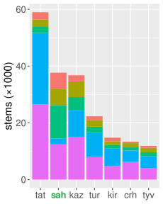
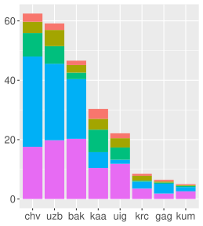
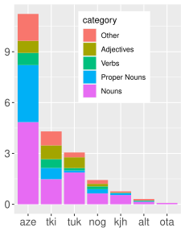

A Prototype Free/Open-Source
Morphological Analyser and Generator for Sakha
Morphological Analyser and Generator for Sakha

Sardana Ivanova¹

Francis M. Tyers²,³

Jonathan N. Washington⁴
- Helsingin yliopisto, Suomi
- Indiana University, USA
- Высшая Школа Экономики, Москва
- Swarthmore College, USA


Overview
Our talk in a nutshell
We developed a prototype free/open source morphological analyser and generator for Sakha
The next 5 minutes:
- Background
- Sakha
- Morphological tranducers
- Implementation and Challenges
- Evaluation
- Future work
- Conclusion
Background
Sakha
- Turkic language
- ~450K speakers
- Spoken primarily in Siberia
- Official status in Sakha Republic
- Entire area prone to economic and cultural impacts of climate change
- Agglutinating — words may be inflected using a series of affixes
- Backness and rounding vowel harmony systems
- Word order: Subject-Object-Verb
- Lena Turkic:
- dlg - Dolgan
- sah - Sakha
- Sayan Turkic:
- dkh - Dukha
- kim - Tofa
- tuh - Tuha
- tyv - Tuvan
- Yeniseian Turkic:
- cjs - Shor
- clw - Chulym
- fyg - Fu-yü Gyrgys
- kjh - Khakas
- tuh - Tuha
- Altay Turkic:
- alt - Altay, Teleut, Telengit
- atv - Chalqan, Qumandy, Tuba
- tlt - Bachat Teleut
- Kypchak (NW) Turkic:
- sty - Siberian Tatar
Background
Morphological tranducers
- Twofold function: morphological analysis and generation
атын ↔ атn px3sg acc /атынadj - Implemented as finite state transducers (FST)
- Compiled from hand-coded lexical, morphotactic, and morphophonological generalisations
- Only one development cycle
- many uses in language technology and ``downstream'' tasks:
- can be repurposed as spell checkers
- may be used in rule-based machine translation pipelines
- Some current uses of this transducer
- used in Revita—language learning platform for revitalization and support of endangered languages (Katinskaia et al., 2018)
- used to generate data in recent shared task on morphological reinflection (Pimentel et al., 2021)
Existing Turkic transducers
Comparison of lexicon size

Production-level
92%-98% coverage
(Tatar, Kazakh, Turkish, Kyrgyz, Crimean Tatar, Tuvan)
92%-98% coverage
(Tatar, Kazakh, Turkish, Kyrgyz, Crimean Tatar, Tuvan)

Working
88-93% coverage
(Bashqort, Chuvash, Uzbek, Qaraqalpaq, Uyghur, Sakha, Karachay-Balkar, Gagauz, Kumyk)
88-93% coverage
(Bashqort, Chuvash, Uzbek, Qaraqalpaq, Uyghur, Sakha, Karachay-Balkar, Gagauz, Kumyk)

Prototype
<80% coverage
(Azerbaycani, Turkmen, Iraqi Türkman, Noghay, Khakas, Altay, Ottoman)
<80% coverage
(Azerbaycani, Turkmen, Iraqi Türkman, Noghay, Khakas, Altay, Ottoman)
(Washington et al., 2019/2021), github.com/apertium
Sakha: >10 500 stems
Implementation and Challenges
Two-level approach using HFST
orthographic form
дьиэлэрбиттэн↕ (twol: phonological mappings)
morphological/lexical form
дьиэ>↕ (lexc: lexicon + morphotactics)
analysis: lemma, POS, grammatical tags
дьиэImplementation and Challenges
Vowel harmony with diphthongs and long vowels
Problem:
- Sakha long vowels (
I I ,A A ) behave like short-vowel counterparts - But diphthongs (
I A ) behave like high vowels (I )
(round after any round V, do not trigger rounding of low Vs)
Solution:
- Each
twolharmony rule (char-to-char mapping): sensitive to whether harmonising V is component of long V or dipthong or not - Many V harmony alternations required multiple rules to implement
Implementation and Challenges
Two-directional consonant assimilation
Problem:
- forms like /tutn-bIt-A/ ‘use-
past -3 ’ realised as [tutummuta]
тутy н>B I т>A :тутуммута - /n/ triggers nasalisation of the following /b/
- /b/ triggers labialisation of the preceding /n/
Solution:
- Mutual influence not problematic in
twol - rules are sensitive to underlying form (left side of :) of adjacent symbol, not surface form (right side of :)
Implementation and Challenges
Many alternations in a single stem
Problem:
- forms like уһун ‘swim[
imp ]’ / устар ‘swim-pres ’ - Several different alternations involved:
с ~ Һ— intervocalic lenitionн ~ т— sonority restrictionsI ~ ∅
Solution:
- ≥1
twolmapping for each alternation - each mapping sensitive to the others & to other parts of morphophonological context
y used for high vowel ~ ∅ alternation, as in previous work (Washington et al., 2019)
Implementation and Challenges
Novel grammatical understanding
Existing literature:
- Sakha exhibits many non-finite verb forms
- Some have finite uses
- Generally categorised roughly as "participle" or "converb"
Our contribution:
- Categorised each form carefully based on uses:
verbal noun, verbal adjective, verbal adverb, infinitive - Implemented each use separately
- Results in some syncretism (forms existing across multiple categories)
- Concluded that there is not a strict participle/converb dichotomy
- Documented in more detail in Washington et al. (2021)
Evaluation
Coverage
- Naïve coverage: the number of forms in a corpus that receive an analysis, regardless of whether or not the analysis is correct (e.g., in context)
| Corpus | Tokens | Coverage |
|---|---|---|
| Newspapers | ~16M | 87.68% |
| Wikipedia | ~2.59M | 88.79% |
| New Testament | ~190K | 90.87% |
Adequate coverage: robust morphology, but many missing stems
Evaluation
Precision & Recall
- created gold standard:
- 500 valid words of Sakha
- randomly selected from Wikipedia corpus
- manually annotated output of transducer
- precision: percentage of analyses returned by the transducer that is correct
- recall: percentage of the correct analyses that is returned
results:
| Corpus | Precision | Recall |
|---|---|---|
| Wikipedia | 99.9% | 69.9% |
i.e., nearly every form returned by the transducer was deemed correct, but many correct analyses were not returned by the transducer (mostly due to low coverage)
Future work
- Expand lexicon (add more lemmas)
- Correct minor issues in implementation of some morphophonological alternations
identified recently in data generation for a shared task (Pimentel et al., 2021) - Morphological/syntactic disambiguation
- More language technology applications of transducer? (spell checkers, MT, etc.?)
Conclusion
- Robust transducer
- high coverage
- high precision
- moderate recall
- Lots of room for improvement!
- Ready for use in language technology applications, downstream tasks
- This work has also contributed to documentation of Sakha grammar
Махтанабыт! / Thank you!
- Fork at github.com/apertium/apertium-sah
- Try out at beta.apertium.org